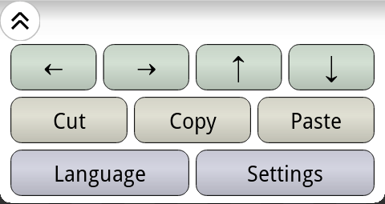

Entering Text
To enter a word, trace it out in a single gesture. Start by touching the first letter. Without lifting your finger,
move to the second letter, then to the third one, and so on. When you reach the last letter, lift your finger. The
word will be recognized and entered.
Entering the word "flow"
Spaces are inserted between words automatically. You don't need to press the space key.
The Word Choice List
Flow can usually figure out what word you were tracing, but to be safe it offers a list of options it thinks you might
have meant. These are displayed in the word choice list, just above the keyboard.
The first word in the list is the default choice: what Flow thinks you meant. If it's right, you don't need to do
anything. Just go on and enter the next word. If you want a different word, select it by touching it in the word
choice list. If none of the choices is what you want, press the delete key to erase the word and try again.
The word choice list
When entering a long word, your screen may not be wide enough to see the whole word choice list at once. Scroll the
list by using your finger to drag it left or right.
Accuracy
When entering short words (less than about five letters), there often are many similar words. This makes it harder
for Flow to tell which one you want (flow? flew? flex? glow?), so you should be very precise when entering the word.
Move your finger in a straight line from the first key to the second, then from the second to the third, and so on.
For longer words, you can be less precise. Just trace the whole word in a smooth, flowing motion. This lets you
enter long words very quickly.
Double Letters
If a word contains a double letter, just trace through that letter as usual. Flow will figure out that you really
meant a double letter. For example, to enter the word "letter", trace out the keys l-e-t-e-r.
Sometimes two words differ only in a double letter. For example, suppose you trace out the keys l-o-t.
This might be "lot", "loot", or the name "Lott". Flow will show all three options in the word choice list. The
most common one ("lot" in this case) will be the default choice.
Modifier Keys
The Flow keyboard has two modifier keys that change the behavior of other keys: Shift and Alt.
Use Shift to enter upper case letters, and Alt to enter numbers or other symbols. If you press a modifier key once,
it affects only the next character you enter. If you press it twice it "locks" on, and affects all characters until you
press it a third time.
Emoji
To display a collection of emoji characters, long press the Shift key.
Typing Mode
Instead of tracing a whole word, you can also type words one letter at a time, just like on a regular keyboard. This is
useful for typing things that are not in Flow's spelling dictionary: passwords, unusual names, etc. As you type, Flow
will try to guess what word you are typing and display choices in the word choice window. If you see the word appear,
just touch it and Flow will complete it for you. Unlike other keyboards, Flow will never "autocomplete" a word without
you telling it to. If you're using typing mode, it assumes you're likely entering something that isn't in its
dictionary.
Long Pressing
If you long press any key, it will enter the "alternate" character for that key: the one you would get if you pressed
the Alt modifier first. That character is shown in the top right corner of each key. For entering just one or two
digits or symbols, this can be faster than using the Alt key.
In many cases, long pressing a key will also show a list of related characters in the word choice list. For
example, long pressing "a" will give variations on the letter a (á, ä, â, etc.). Long pressing the dollar sign will
give a list of other currency symbols (€, £, ¥, etc.). To enter one of these characters, long press the appropriate
key, then select the character you want in the word choice list.
Here is a full list of the related characters for each key.
| Key | Related Characters |
|---|
| a | á, à, ä, â, å, æ |
| c | ç © |
| d | ð |
| e | é, è, ë, ê |
| i | í, ì, ï, î |
| n | ñ |
| o | ó, ò, ö, ô, œ, ø |
| p | π ¶ |
| r | ® |
| s | ß, § |
| t | ™, þ |
| u | ú, ù, ü, û |
| $ | €, £, ¢, ¥ |
| + | ± |
| - | –, _ |
| * | °, ^, ‡, † |
| / | \, |, ÷ |
| = | ≠, ≈, ~ |
| ! | ¡ |
| ? | ¿ |
| ( | <, [, {, ≤, «, :-( |
| ) | >, ], }, ≥, », :-) |
| . | … |
| ; | ;-) |
Spacing and Capitalization
Flow automatically inserts spaces between words, and capitalizes the first letter of each sentence. Usually that is what
you want, but not always. For example, when entering an email address or URL, you certainly don't want a space added
after each period. Sometimes Flow can figure that out based on what text field you are typing into. When you type into
the address field in an email program, for example, it knows you are entering an email address and turns off the automatic
spacing and capitalization. But if you want to type an email address or URL in the body of a message, you need to tell
it yourself.
Long press the period key to turn automatic spacing and capitalization on or off. The appearance of the key will change
to show whether it is currently enabled or disabled.
Spacing and capitalization are...
The Controls Panel
Press the button at the left end of the word choice list to display the controls panel:

Press the button a second time to hide it again. The controls panel contains arrow keys, buttons for accessing the
clipboard, access to the Flow keyboard settings, and a shortcut for quickly switching between languages.